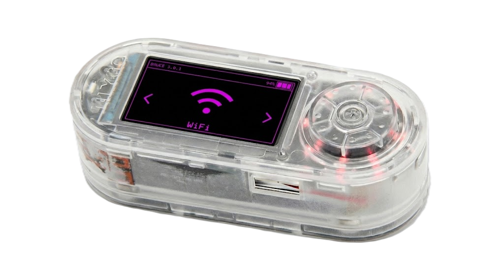

WiFi Arsenal
El módulo WiFi del ESP32-S3 va mucho más allá de conectarse a internet. Con el firmware Bruce, el T-Embed se convierte en una herramienta de auditoría inalámbrica capaz de analizar, atacar y monitorizar redes 802.11 b/g/n.
¿Por qué el ESP32-S3 puede hacer todo esto?
El chip ESP32-S3 integra un módulo WiFi 802.11 b/g/n completo que normalmente trabaja en modo "cliente" (conectarse a redes) o "punto de acceso" (crear redes). Sin embargo, el hardware también soporta un tercer modo: el modo monitor.
En modo monitor, la antena del ESP32-S3 deja de filtrar paquetes y escucha todo el tráfico WiFi del aire, incluyendo paquetes de redes a las que no está conectado. Bruce activa este modo desde su menú principal y lo aprovecha para todas sus funciones WiFi.
- Modo cliente: Conectarse a una red (uso normal)
- Modo AP: Crear una red (uso normal)
- Modo monitor: Escuchar todo el tráfico del canal seleccionado
- Modo inyección: Enviar tramas WiFi personalizadas al aire

Herramientas WiFi en Bruce
Estas son las opciones que aparecen en el menú WiFi del T-Embed al iniciar Bruce.
Scan APs
Bruce escanea todos los canales (1-13) y muestra en la pantalla TFT del T-Embed una lista de redes cercanas con su SSID, BSSID (MAC del router), canal, potencia de señal (RSSI) y tipo de cifrado (WPA2, WPA3, Abierta...).
El encoder rotatorio permite desplazarse por la lista y seleccionar un objetivo para los ataques posteriores.
Deauth Attack
Tras seleccionar una red en el escáner, Bruce puede enviar tramas de desautenticación falsas desde la antena del ESP32-S3. El router y sus clientes las reciben como si fueran legítimas y se desconectan.
Funciona porque en WPA2 las tramas de gestión no van firmadas. WPA3 con PMF activo es inmune a este ataque.
Beacon Spam
El ESP32-S3 emite cientos de tramas Beacon por segundo, cada una con un SSID diferente. El T-Embed lo hace todo desde su firmware sin necesitar ningún hardware extra: solo su antena integrada.
Bruce permite elegir entre listas de SSIDs predefinidas o introducir nombres propios desde el menú del dispositivo usando el encoder rotatorio.
Captura de Handshake
En modo monitor, Bruce escucha el canal del objetivo esperando que un cliente se conecte. Si combinas esta función con un Deauth, fuerzas la reconexión del cliente para capturar el handshake WPA2 de 4 vías directamente en la tarjeta microSD del T-Embed (formato .pcap).
El archivo .pcap se puede analizar después en un PC con Aircrack-ng o Hashcat.
¿Cómo ejecuta Bruce el ataque Deauth?
Para entender qué hace el T-Embed por dentro cuando seleccionas "Deauth Attack" en Bruce, hay que conocer brevemente la estructura de una trama WiFi.
Las Management Frames (Tramas de Gestión)
Toda red WiFi intercambia tres tipos de paquetes: de datos (el contenido real), de control (coordinación del canal) y de gestión. Estas últimas son las que mantienen la conexión viva: anuncios de red (Beacon), solicitudes de unión (Association) y órdenes de desconexión (Deauthentication).
El problema con WPA2 es que estas tramas de gestión no van firmadas ni cifradas. Cualquier dispositivo puede fabricar una trama Deauth falsa poniendo la MAC del router como remitente, y el cliente la obedecerá sin preguntar.
Lo que hace el ESP32-S3 paso a paso:
- Bruce activa el modo monitor en el ESP32-S3 y fija el canal de la red objetivo.
- Construye una trama Deauthentication con la MAC del router como origen y la MAC del cliente (o la MAC de broadcast FF:FF:FF:FF:FF:FF) como destino.
- La inyecta al aire mediante la antena integrada del T-Embed.
- Repite el proceso en bucle hasta que cancelas desde el encoder.
T-Embed
(Bruce)
Atacante
Deauth falso (MAC del Router)
Cliente
(Móvil / PC)
Víctima
Router
(AP)
Conexión real
El Handshake WPA2 y por qué le importa a Bruce
Cuando el cliente se reconecta tras un Deauth, el router y el cliente intercambian un "apretón de manos" de 4 mensajes para verificar que ambos conocen la contraseña. Bruce, en modo monitor, captura esos 4 mensajes y los guarda en la microSD.
Mensaje 1 y 2 — La negociación
El router envía un número aleatorio (ANonce). El cliente responde con el suyo (SNonce) junto con un código de integridad (MIC) calculado usando la contraseña de la red. Bruce captura aquí el MIC, que es la "huella" de la contraseña.
Mensajes 3 y 4 — La confirmación
El router verifica que el MIC es correcto (el cliente sabe la contraseña), envía la clave de grupo cifrada y el cliente confirma. La conexión queda establecida. Bruce ya tiene lo que necesita: el handshake completo en .pcap.
¿Qué se hace con ese archivo .pcap?
El handshake capturado por el T-Embed se pasa a un PC. Herramientas como Aircrack-ng o Hashcat intentan adivinar la contraseña original comparando el MIC del handshake con los MICs calculados para cada palabra de un diccionario (ej. rockyou.txt). Si la contraseña está en el diccionario, la encuentran.
- Contraseña débil ("12345678"): encontrada en segundos.
- Contraseña de diccionario ("micasa123"): encontrada en minutos u horas.
- Contraseña aleatoria larga ("Kd#9mZp!xL3"): prácticamente imposible.
El crackeo se hace offline en el PC, no en el T-Embed. El ESP32-S3 no tiene potencia de cómputo suficiente para eso.
Resumen de funciones WiFi del T-Embed con Bruce
| Función en Bruce | Qué hace el T-Embed | Hardware necesario | Contra qué funciona |
|---|---|---|---|
| Scan APs | Lista redes cercanas con canal, MAC y cifrado | Solo el T-Embed (antena integrada) | Todas las redes WiFi |
| Deauth Attack | Desconecta clientes de la red objetivo | Solo el T-Embed | Redes WPA2 sin PMF |
| Beacon Spam | Emite cientos de SSIDs falsos por segundo | Solo el T-Embed | Cualquier dispositivo con WiFi |
| Captura Handshake | Guarda el handshake WPA2 en microSD (.pcap) | T-Embed + tarjeta microSD | Redes WPA2 (no WPA3) |
Aviso Legal y Uso Responsable
El contenido de esta guía tiene ÚNICAMENTE fines educativos y de investigación en seguridad.
Prohibido
- Usar el T-Embed para atacar redes ajenas sin permiso
- Ejecutar Deauth contra redes que no sean tuyas
- Capturar handshakes de terceros
Permitido
- Auditar tu propia red doméstica
- Laboratorio con redes propias y aisladas
- Pentesting con contrato de autorización firmado
Legislación: El acceso no autorizado a sistemas informáticos es delito (Art. 197 CP). El desconocimiento de la ley NO exime de responsabilidad.